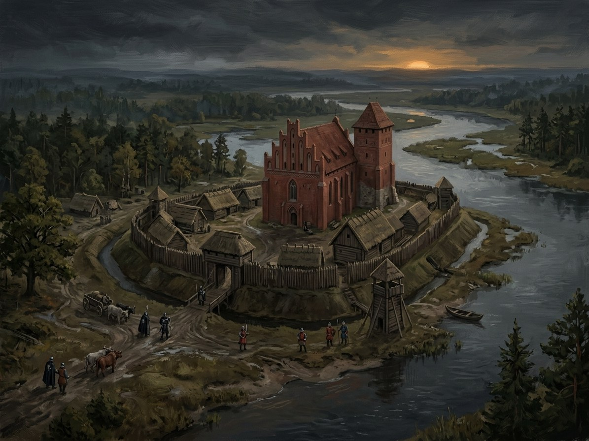

Christmemel (Skirsnemunė)¶
Ryšiai
Events here: Treaty of Christmemel (Švitrigaila and the Order)
Christmemel (Skirsnemunė)

Christmemel (Skirsnemunė) · place¶
Tipas |
place |
Pastaba |
Skirsnemunė: Order castle on the Nemunas; site of Švitrigaila’s 1431 alliance treaty. |
In the 1380s [Historical record]¶
Christmemel (now Skirsnemunė) lies on the Nemunas about 9 km from Jurbarkas. The Order built a wood-and-earth castle on a hill fort here between 8 and 22 April 1313 as a base against Samogitia; Vytenis besieged it in 1315 for 17 days without success, and it was abandoned in 1328. A Christmemel is again among the Order’s Samogitian castles in 1409, when the Samogitian uprising took and burned it (this is the account in en.wikipedia; whether the site is the same is not established). The Treaty of Christmemel was concluded here on 19 June 1431: Švitrigaila, Grand Master Paul von Rusdorf and the Livonian Master Zisse von Rutenberg agreed to mutual aid if attacked, war only by joint consent, and shared spoils; witnesses included Švitrigaila’s brother Lengvenis, Žygimantas Kęstutaitis, Jonas Goštautas, Kristinas Astikas and other nobles. The Polish invasion of Volhynia began six days later. Sources: VLE (Skirsnemunė); en.wikipedia (Treaty of Christmemel, Skirsnemunė).
Sensory sketch¶
A river meadow on the bank of the Nemunas under old trees in mid-June, grass high, leaves new, the river smell of mud and fish; a pavilion or tent of the Order’s colours, banners snapping, a cluster of horses. Mosquitoes at dusk. Behind the chancery sounds there is the continuous sound of the river itself, the oldest speaker present.
Sagoje¶
A treaty sworn on the Order’s river that is really a declaration that Lithuania is at war with itself: the saga places the signing on the bank beneath trees (Book V ch. 3). The treaty binds Švitrigaila to the Order; Žygimantas Kęstutaitis stands among the witnesses and will overthrow him in 1432.
Getting there¶
From Jurbarkas, 9 km (a morning’s ride). From Kaunas about 90 km (two days by horse). From Vilnius 185 km, four to five days. From Marienburg, a fortnight by route; from Königsberg, 250 km across the Wildnis. Lutsk, where Švitrigaila’s war went next, is about 500 km south-east.
Scenes set here¶
Book V ch. 3 Švitrigailos pakilimas (dateline „1430 Oct to 1431 Sep, Vilnius, Christmemelis, Luckas“); recalled in ch. 4.
Chronologija¶
Year |
Event |
Book |
|---|---|---|
1431-06-19 |
V · Vilko Palikimas |
Sąsajos¶
graph LR
christmemel["Christmemel (Skirsnemunė)"]
ev_christmemel["Treaty of Christmemel (Švitrigaila and the Order)"]
ev_christmemel -->|Location| christmemel
style christmemel stroke-width:3px